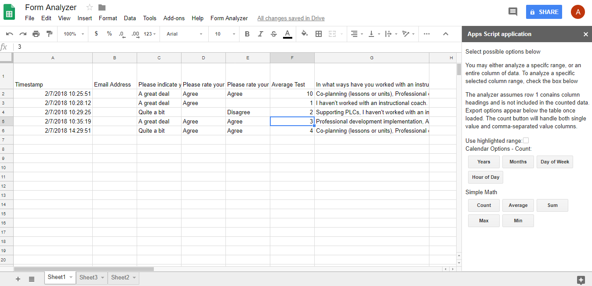

Sheets in the Classroom
Google sheets is a powerful tool and is very easy to use, once you are familiar with its syntax. This post will focus on how you can use 3 different statements, which should give a good starting point from which to grow. We will focus on =COUNTIF, COUNTIFS, and =QUERY
Example Table
| A | B | C | D | |
| 1 | mary | A | B | 2 |
| 2 | john | B | B | 1 |
| 3 | sally | C | C | 0 |
=COUNTIF
As with all sheet functions, we start with the ‘=’ sign, this lets the sheet know we have something coming that will format other pieces of data based on what is input. COUNTIF, allows us to select from a range, a count of the values that match a certain parameter.
In the table above: =countif(A1:A3,”mary”) would return 1, since there is only 1 entry with mary. What is important to notice is that “mary” has double quotation marks around it, this indicates a string, or sequence of character, values, instead of a number, date, or other value.
Similarly =countif(C1:C3,”B”), would return 2, since there are two values that contain B as an answer.
Let’s consider column D to contain the total number of correct and incorrect answers. =countif(D1:D3,<2), would return a value of 2, since there are two entries that contain a value of less than 2.
The power of this statement is that it quickly allows you to count the number of values that match a particular search query/string. So if you were curious how many students answered one question a particular way or another, you would be able to easily calculate that number based on the responses that come in. This instead of you manually tabulating it yourself. Intervention just got a whole lot easier, especially if you have a cutoff.
=COUNTIFS
This function is very similar to the one above, but the difference is that it allows you to calculate the total number of values based upon multiple criteria and multiple ranges. It is structured very closely to the above example:
=countifs(B:B,”B”,D:D,”2”), this would return 2, since there is one value in column B with the value B, and one value in column D with the value 2. If you were to have related questions on a quick check quiz, you would be able to see how many students answered similarly, or would be able to count the number of students whose answers match two criteria on either different or the same row. You will notice I typed in B:B, instead of B1:B3, the difference is that in this example above I included ALL values in column B and D, not just B1-B3, so using specific notation is also important.
=QUERY
This is perhaps one of the most powerful tools and I will keep it simple for this post, but know there is a lot more it can do, let’s use an example.
=query(A:D,”select * where A = ‘mary’”), this will return all values in the sheet columns A - D where the name mary appears in column A, discluding all other values. If we replace the * with a column letter within the range A-D, you will return each of the values in that column where column A matches ‘mary’. The query selector is valuable because it lets you quickly break down data based upon some kind of selection you want. If you had a running list of exit tickets in a single sheet, you would be able to return all the exit tickets of a particular student by putting in their name into the where A = ‘studentName’, portion. The QUERY is limited by the columns or range you select, in this case A:D, you could not for example. Say ‘select E where A = ‘mary’”), because column E was not included in the initial QUERY.
Notice that the QUERY string is enclosed in double quotations, this is mandatory, and notice also that mary has a single quotation mark around the name to indicate mary is a string value.
What if my values are in a different sheet?
Things start to get a little tricky, but lets say, for the sake of simplicity, that we want to run some formulas in a sheet tab called SHEET2, no spaces, and that our data lies in SHEET1, no spaces.
We would format our formula like:
- =countif(SHEET1!A:D,”mary”), notice the sheet name is followed by an exclamation point, and then the range to search, with no spaces.
- If a sheet does have a space in the name ,then you can enclose ite sheet name in a single/double quote, and then follow with the exclamation point like: =countif(“SHEET1”!A:D,”mary”). It is just far easier to have sheet names without spaces to make sure you get the data going where you want.
There you have it, some quick and easy formulas, You can get even more powerful as you chain them together to do more and interesting things. Think if you wanted to query all students who had scored below a certain threshold on an exam, and then count how many of those students missed a single question or answered a certain way. You have the tools now to do that.
As always, if you have an questions about formatting or would like help with these formulas or setting up more advanced ones, please don’t hesitate to reach out and I will be more than happy to help.